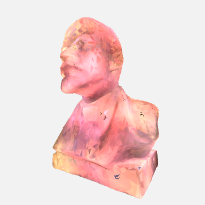

Alexandr Poltavsky
Software Developer
Location: Russia, Moscow
poltavsky.alexandr@gmail.com
Blog
Github
Shadertoy
Twitter
Dynamic Lighting using Primitive ID: Lessons Learned
One day I had an idea to implement dynamic lighting by aggregating and providing lights per face in the pixel shader. The shader was then going to sample it from a texture using primitive ID (gl_PrimitiveID/SV_PrimitiveID). I thought it could be quite efficient due to coherent warp execution. Below is the result:

Do you spot a problem on the image? Click the image for the answer. There is an initial WebGL demo where you can see it happening, just rotate the model. Being blissfully unaware of the cause of this I set out to quickly solve it. And failed. This post aims to describe what went wrong and how I solved it.
No matter how hard I tried I could not completely remove this popping effect. I noticed that it becomes more intense when increasing the number of lights or effective radius. Arseny Kapoulkine suggested in a discussion that I really should do it per vertex rather than per face. I tried and added a button to the demo with a label "Per face/Per vertex". In the lighting equation (really a hack and not physically based) I use the normal so the quality dropped, but popping went away. That was an indication of where to look.
Turns out, if we dealing with hundreds of lights then providing smooth lighting is very hard. Let's assume we have lights A, B, C, and D (the pic below):
As we can see, every light affects every point in space. That means in order to calculate the first approximation (no indirect lighting) to the real physical amount of incoming light we need to go through every light. With hundreds of lights this isn't practical and various clustering techniques are used.
In the image above the horizontal lines show the effective radius of the light. It's used for clustering. In many lights cases one such cluster can easily exceed, say, 50 lights, meaning clustering alone is not enough. At first it might seem that increasing the number of clusters will reduce the number of lights per cluster but mostly it won't:
Now it will become clear what caused popping and why it is so hard to solve in general. In the demo I generate a couple hundreds of lights and place them into a 3D volume. Then, on every frame, I use the center of a face to sample into that volume and prepare per face light lists which are then uploaded into a float texture. A single cell/cluster could easily be more than 50 lights so I had to put a limit on it. Now imagine a limit of 16 lights. That means that we pick lights as if by chance. Yes, we can sort them and reduce the resulting error, but when the true number of lights is 2x or 4x greater we have no silver bullet. And that is the source of our problem.
We can try to remove popping by increasing the per face light limit and it works but it's slow. Adding more clusters just makes lighting smoother but not cheaper. One working option is to reduce the effective radius of lights. It works but defeats the purpose of good lighting. Is there a general effective solution? And the answer is yes.
As I said in the beginning, switching to per vertex lighting made popping much less apparent. And it turns out the answer is interpolation. Interpolation is essential to texturing. Textures are discrete values, just as the lighting situation I described, and interpolation makes it appear as a continuous function which we sample. That means what we need is to calculate lighting for nearby clusters and use filtering.
Below is the resulting WebGL demo. Since it's not easy to combine per face lighting with filtering, I switched to clustered lighting: lights are put into clusters based on an effective radius and uploaded into a float 3D texture (really a 2D texture). The shader samples 8 nearby clusters and does trilinear filtering. There is still an option to do lighting per pixel or per vertex. The model in the demo is a statue of Vladimir Ilyich.

Click to show WebGL demo
Click to show WebGL demo